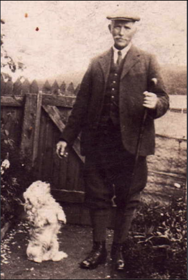

JOHN GRANT
Born: 07 Jun 1820 in Boharm, Morayshire
Died: 17 Dec 1859 in Forgie, Boharm,Banffshire, Scotland.
Occ:
Notes
Married:12 Feb 1848 in Boharm, Banffshire, Scotland.
ISABELLS ROBB
Born: 14 Nov 1828 in Forgie, Boharm, Moray.
Died: 28 Jul 1899 in Mossend,Boharm
Occ:
Notes
Children:
Margaret(1848)
Isabella(1850)
Ann(1852)
Jane(1854)
Elizabeth(1856)
John(1858)
[ Liddle Home ]
[ Grant Home ]